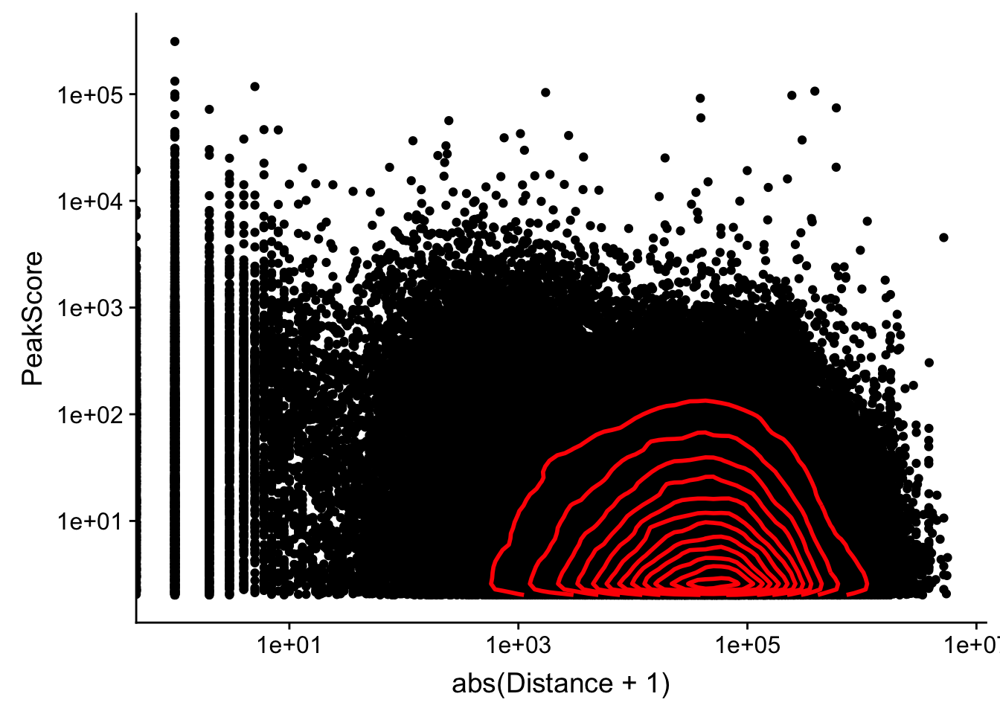

Peak To Gene Assignment
Briana Mittleman
9/26/2018
Last updated: 2018-10-03
workflowr checks: (Click a bullet for more information)-
✔ R Markdown file: up-to-date
Great! Since the R Markdown file has been committed to the Git repository, you know the exact version of the code that produced these results.
-
✔ Environment: empty
Great job! The global environment was empty. Objects defined in the global environment can affect the analysis in your R Markdown file in unknown ways. For reproduciblity it’s best to always run the code in an empty environment.
-
✔ Seed:
set.seed(12345)The command
set.seed(12345)was run prior to running the code in the R Markdown file. Setting a seed ensures that any results that rely on randomness, e.g. subsampling or permutations, are reproducible. -
✔ Session information: recorded
Great job! Recording the operating system, R version, and package versions is critical for reproducibility.
-
Great! You are using Git for version control. Tracking code development and connecting the code version to the results is critical for reproducibility. The version displayed above was the version of the Git repository at the time these results were generated.✔ Repository version: 338174b
Note that you need to be careful to ensure that all relevant files for the analysis have been committed to Git prior to generating the results (you can usewflow_publishorwflow_git_commit). workflowr only checks the R Markdown file, but you know if there are other scripts or data files that it depends on. Below is the status of the Git repository when the results were generated:
Note that any generated files, e.g. HTML, png, CSS, etc., are not included in this status report because it is ok for generated content to have uncommitted changes.Ignored files: Ignored: .DS_Store Ignored: .Rhistory Ignored: .Rproj.user/ Ignored: output/.DS_Store Untracked files: Untracked: KalistoAbundance18486.txt Untracked: analysis/genometrack_figs.Rmd Untracked: analysis/ncbiRefSeq_sm.sort.mRNA.bed Untracked: analysis/snake.config.notes.Rmd Untracked: analysis/verifyBAM.Rmd Untracked: data/18486.genecov.txt Untracked: data/APApeaksYL.total.inbrain.bed Untracked: data/NuclearApaQTLs.txt Untracked: data/RNAkalisto/ Untracked: data/TotalApaQTLs.txt Untracked: data/Totalpeaks_filtered_clean.bed Untracked: data/YL-SP-18486-T-combined-genecov.txt Untracked: data/YL-SP-18486-T_S9_R1_001-genecov.txt Untracked: data/bedgraph_peaks/ Untracked: data/bin200.5.T.nuccov.bed Untracked: data/bin200.Anuccov.bed Untracked: data/bin200.nuccov.bed Untracked: data/clean_peaks/ Untracked: data/comb_map_stats.csv Untracked: data/comb_map_stats.xlsx Untracked: data/comb_map_stats_39ind.csv Untracked: data/combined_reads_mapped_three_prime_seq.csv Untracked: data/ensemble_to_genename.txt Untracked: data/filtered_APApeaks_merged_allchrom_refseqTrans.closest2End.bed Untracked: data/filtered_APApeaks_merged_allchrom_refseqTrans.closest2End.noties.bed Untracked: data/first50lines_closest.txt Untracked: data/gencov.test.csv Untracked: data/gencov.test.txt Untracked: data/gencov_zero.test.csv Untracked: data/gencov_zero.test.txt Untracked: data/gene_cov/ Untracked: data/joined Untracked: data/leafcutter/ Untracked: data/merged_combined_YL-SP-threeprimeseq.bg Untracked: data/nom_QTL/ Untracked: data/nom_QTL_opp/ Untracked: data/nom_QTL_trans/ Untracked: data/nuc6up/ Untracked: data/other_qtls/ Untracked: data/peakPerRefSeqGene/ Untracked: data/perm_QTL/ Untracked: data/perm_QTL_opp/ Untracked: data/perm_QTL_trans/ Untracked: data/reads_mapped_three_prime_seq.csv Untracked: data/smash.cov.results.bed Untracked: data/smash.cov.results.csv Untracked: data/smash.cov.results.txt Untracked: data/smash_testregion/ Untracked: data/ssFC200.cov.bed Untracked: data/temp.file1 Untracked: data/temp.file2 Untracked: data/temp.gencov.test.txt Untracked: data/temp.gencov_zero.test.txt Untracked: output/picard/ Untracked: output/plots/ Untracked: output/qual.fig2.pdf Unstaged changes: Modified: analysis/28ind.peak.explore.Rmd Modified: analysis/39indQC.Rmd Modified: analysis/cleanupdtseq.internalpriming.Rmd Modified: analysis/dif.iso.usage.leafcutter.Rmd Modified: analysis/diff_iso_pipeline.Rmd Modified: analysis/explore.filters.Rmd Modified: analysis/overlapMolQTL.Rmd Modified: analysis/overlap_qtls.Rmd Modified: analysis/peakOverlap_oppstrand.Rmd Modified: analysis/pheno.leaf.comb.Rmd Modified: analysis/test.max2.Rmd Modified: code/Snakefile
Expand here to see past versions:
| File | Version | Author | Date | Message |
|---|---|---|---|---|
| Rmd | 338174b | Briana Mittleman | 2018-10-03 | qtl window around gene annoation |
| html | f40b377 | Briana Mittleman | 2018-09-30 | Build site. |
| Rmd | b79486f | Briana Mittleman | 2018-09-30 | diff iso code |
| html | 51c8b9c | Briana Mittleman | 2018-09-29 | Build site. |
| Rmd | 0f9bd65 | Briana Mittleman | 2018-09-29 | overlap total/nuc |
| html | 607c719 | Briana Mittleman | 2018-09-29 | Build site. |
| Rmd | f3779bc | Briana Mittleman | 2018-09-29 | evaluate number of qtls |
| html | 1cd047d | Briana Mittleman | 2018-09-27 | Build site. |
| Rmd | 43c3f5b | Briana Mittleman | 2018-09-27 | nom and perm qtl |
| html | 27a43dc | Briana Mittleman | 2018-09-27 | Build site. |
| Rmd | 22db068 | Briana Mittleman | 2018-09-27 | add filtering by peak score |
| html | 1501499 | Briana Mittleman | 2018-09-26 | Build site. |
| Rmd | dd2b07d | Briana Mittleman | 2018-09-26 | account for ties |
| html | 149d033 | Briana Mittleman | 2018-09-26 | Build site. |
| html | aaed5fd | Briana Mittleman | 2018-09-26 | Build site. |
| Rmd | eda266e | Briana Mittleman | 2018-09-26 | test peak to gene transcript dist |
library(tidyverse)── Attaching packages ──────────────────────────────────────────────────────── tidyverse 1.2.1 ──✔ ggplot2 3.0.0 ✔ purrr 0.2.5
✔ tibble 1.4.2 ✔ dplyr 0.7.6
✔ tidyr 0.8.1 ✔ stringr 1.3.1
✔ readr 1.1.1 ✔ forcats 0.3.0── Conflicts ─────────────────────────────────────────────────────────── tidyverse_conflicts() ──
✖ dplyr::filter() masks stats::filter()
✖ dplyr::lag() masks stats::lag()library(workflowr)This is workflowr version 1.1.1
Run ?workflowr for help getting startedlibrary(cowplot)
Attaching package: 'cowplot'The following object is masked from 'package:ggplot2':
ggsavelibrary(reshape2)
Attaching package: 'reshape2'The following object is masked from 'package:tidyr':
smithslibrary(VennDiagram)Loading required package: gridLoading required package: futile.loggerI will use this analysis to investigate further the best way to assign the peaks to a gene. Right now I am using
Prepare referece
#!/bin/bash
#SBATCH --job-name=intGenes_combfilterPeaksOppStrand
#SBATCH --account=pi-yangili1
#SBATCH --time=24:00:00
#SBATCH --output=intGenes_combfilterPeaksOppStrand.out
#SBATCH --error=intGenes_combfilterPeaksOppStrand.err
#SBATCH --partition=broadwl
#SBATCH --mem=12G
#SBATCH --mail-type=END
module load Anaconda3
source activate three-prime-env
bedtools intersect -wa -wb -sorted -S -a /project2/gilad/briana/threeprimeseq/data/mergedPeaks_comb/filtered_APApeaks_merged_allchrom.named.fixed.bed -b /project2/gilad/briana/genome_anotation_data/ncbiRefSeq_sm_noChr.sort.mRNA.bed > /project2/gilad/briana/threeprimeseq/data/mergedPeaks_comb/filtered_APApeaks_merged_allchrom_refseqGenes.OppStrand.bedThis results in peaks being mapped to multiple genes. I want to use a method where I look for the closest end of transcript to each peak then use that gene for the assignment. This would mean each peak is assigned to one gene.
Create a python script to process the NCBI file. I want protien coding transcript ends with the associated gene names. Original file: ncbiRefSeq.txt
- Column 2 transcript name
- Column 13 gene name
- NM is protein coding
EndOfProCodTrans.py
def main(inF, outF):
infile= open(inF, "r")
fout = open(outF,'w')
for line in infile:
linelist=line.split()
transcript=linelist[1]
transcript_id=transcript.split("_")[0]
if transcript_id=="NM":
chr=linelist[2][3:]
strand=linelist[3]
gene= linelist[12]
if strand == "+" :
end = int(linelist[7])
end2= end - 1
fout.write("%s\t%d\t%d\t%s:%s\t.\t%s\n"%(chr, end2, end, transcript,gene, strand))
if strand == "-":
end= int(linelist[4])
end2= end + 1
fout.write("%s\t%d\t%d\t%s:%s\t.\t%s\n"%(chr, end, end2, transcript,gene, strand))
if __name__ == "__main__":
inF = "/project2/gilad/briana/genome_anotation_data/ncbiRefSeq.txt"
outF= "/project2/gilad/briana/genome_anotation_data/ncbiRefSeq_endProtCodGenes.txt"
main(inF, outF)Find closest gene to each peak
bedtools closest
-A peaks /project2/gilad/briana/threeprimeseq/data/mergedPeaks_comb/filtered_APApeaks_merged_allchrom.named.fixed.bed -B transcript file /project2/gilad/briana/genome_anotation_data/ncbiRefSeq_endProtCodGenes_sort.txt -S (opposite strand) -D b (give distance wrt to gene strand)
#!/bin/bash
#SBATCH --job-name=TransClosest2End
#SBATCH --account=pi-yangili1
#SBATCH --time=24:00:00
#SBATCH --output=TransClosest2End.out
#SBATCH --error=TransClosest2End.err
#SBATCH --partition=broadwl
#SBATCH --mem=12G
#SBATCH --mail-type=END
module load Anaconda3
source activate three-prime-env
bedtools closest -S -D b -a /project2/gilad/briana/threeprimeseq/data/mergedPeaks_comb/filtered_APApeaks_merged_allchrom.named.fixed.bed -b /project2/gilad/briana/genome_anotation_data/ncbiRefSeq_endProtCodGenes_sort.txt > /project2/gilad/briana/threeprimeseq/data/mergedPeaks_comb/filtered_APApeaks_merged_allchrom_refseqTrans.closest2End.bedI will take a look at this file in R then I will process the file in python.
names=c("PeakChr", "PeakStart", "PeakEnd", "PeakName","PeakScore", "PeakStrand", "GeneChr", "GeneStart", "GeneEnd", "Transcript", "GeneScore", "GeneStrand", "Distance" )
peak2transDist=read.table("../data/filtered_APApeaks_merged_allchrom_refseqTrans.closest2End.bed", col.names = names, stringsAsFactors = F, header=F)ggplot(peak2transDist, aes(x=abs(Distance)))+ geom_density() + scale_x_log10()Warning: Transformation introduced infinite values in continuous x-axisWarning: Removed 4362 rows containing non-finite values (stat_density).
Expand here to see past versions of unnamed-chunk-6-1.png:
| Version | Author | Date |
|---|---|---|
| 27a43dc | Briana Mittleman | 2018-09-27 |
| aaed5fd | Briana Mittleman | 2018-09-26 |
peak2transDist0=peak2transDist %>% filter(Distance==0)
nrow(peak2transDist0)[1] 4362peak2transDist200=peak2transDist %>% filter(abs(Distance)<200)
nrow(peak2transDist200)[1] 23778summary(peak2transDist$Distance) Min. 1st Qu. Median Mean 3rd Qu. Max.
-5523243 -57698 -12830 -23711 3373 5592124 try adding the no ties flag -t first.
peak2transDist_noties=read.table("../data/filtered_APApeaks_merged_allchrom_refseqTrans.closest2End.noties.bed", col.names = names, stringsAsFactors = F, header=F)
ggplot(peak2transDist_noties, aes(x=abs(Distance)))+ geom_density() + scale_x_log10()Warning: Transformation introduced infinite values in continuous x-axisWarning: Removed 2044 rows containing non-finite values (stat_density).
Expand here to see past versions of unnamed-chunk-8-1.png:
| Version | Author | Date |
|---|---|---|
| 27a43dc | Briana Mittleman | 2018-09-27 |
| 1501499 | Briana Mittleman | 2018-09-26 |
peak2transDist0_noT=peak2transDist_noties%>% filter(Distance==0)
nrow(peak2transDist0_noT)[1] 2044peak2transDist200_noT=peak2transDist_noties %>% filter(abs(Distance)<200)
nrow(peak2transDist200_noT)[1] 10488summary(peak2transDist$Distance) Min. 1st Qu. Median Mean 3rd Qu. Max.
-5523243 -57698 -12830 -23711 3373 5592124 ggplot(peak2transDist_noties, aes(x=abs(Distance)))+ geom_histogram(binwidth = .5) + scale_x_log10()Warning: Transformation introduced infinite values in continuous x-axisWarning: Removed 2044 rows containing non-finite values (stat_bin).Expand here to see past versions of unnamed-chunk-9-1.png:
| Version | Author | Date |
|---|---|---|
| 27a43dc | Briana Mittleman | 2018-09-27 |
| 1501499 | Briana Mittleman | 2018-09-26 |
Looking at this visually suggests that we have way too many peaks. I want to compare the peak score which is related to the coverage to the abs(distace)
ggplot(peak2transDist_noties, aes(y=PeakScore, x=abs(Distance + 1))) + geom_point() + scale_x_log10() + scale_y_log10() + geom_density2d(na.rm = TRUE, size = 1, colour = 'red') Warning: Transformation introduced infinite values in continuous x-axis
Warning: Transformation introduced infinite values in continuous x-axis
Expand here to see past versions of unnamed-chunk-10-1.png:
| Version | Author | Date |
|---|---|---|
| 27a43dc | Briana Mittleman | 2018-09-27 |
Alternatively let me try to remove low peak score values.
allPeakplot=ggplot(peak2transDist_noties, aes(x=abs(Distance + 1)))+ geom_density() + scale_x_log10() + labs(title="Distance all peaks to gene end") + annotate("text", label=nrow(peak2transDist_noties), x=10, y=.4)
peak2transDist_score500=peak2transDist_noties%>% filter(PeakScore>500)
score500plot=ggplot(peak2transDist_score500, aes(x=abs(Distance + 1)))+ geom_density() + scale_x_log10() + labs(title="Peak Score > 500") + annotate("text", label=nrow(peak2transDist_score500), x=10, y=.4)
peak2transDist_score200=peak2transDist_noties%>% filter(PeakScore>200)
score200plot=ggplot(peak2transDist_score200, aes(x=abs(Distance + 1)))+ geom_density() + scale_x_log10() + labs(title="Peak Score > 200") + annotate("text", label=nrow(peak2transDist_score200), x=10, y=.4)
peak2transDist_score100=peak2transDist_noties%>% filter(PeakScore>100)
score100plot=ggplot(peak2transDist_score100, aes(x=abs(Distance + 1)))+ geom_density() + scale_x_log10() + labs(title="Peak Score > 100") + annotate("text", label=nrow(peak2transDist_score100), x=10, y=.4)
peak2transDist_score50=peak2transDist_noties%>% filter(PeakScore>50)
score50plot=ggplot(peak2transDist_score50, aes(x=abs(Distance + 1)))+ geom_density() + scale_x_log10() + labs(title="Peak Score > 50")+ annotate("text", label=nrow(peak2transDist_score50), x=10, y=.4)
peak2transDist_score20=peak2transDist_noties%>% filter(PeakScore>20)
score20plot=ggplot(peak2transDist_score20, aes(x=abs(Distance + 1)))+ geom_density() + scale_x_log10() + labs(title="Peak Score > 10")+ annotate("text", label=nrow(peak2transDist_score20), x=10, y=.4)
plot_grid(allPeakplot,score20plot,score50plot,score100plot,score200plot, score500plot)Warning: Transformation introduced infinite values in continuous x-axisWarning: Removed 662 rows containing non-finite values (stat_density).Warning: Transformation introduced infinite values in continuous x-axisWarning: Removed 431 rows containing non-finite values (stat_density).Warning: Transformation introduced infinite values in continuous x-axisWarning: Removed 327 rows containing non-finite values (stat_density).Warning: Transformation introduced infinite values in continuous x-axisWarning: Removed 234 rows containing non-finite values (stat_density).Warning: Transformation introduced infinite values in continuous x-axisWarning: Removed 150 rows containing non-finite values (stat_density).Warning: Transformation introduced infinite values in continuous x-axisWarning: Removed 78 rows containing non-finite values (stat_density).
Expand here to see past versions of unnamed-chunk-11-1.png:
| Version | Author | Date |
|---|---|---|
| 27a43dc | Briana Mittleman | 2018-09-27 |
Call QTLS with this assignment
I am gonig to use this assignment method to call QTLs. The bed file I will make the phenotypes from is
- Peak CHR
- Peak Start
- Peak End
- Peak Name
- Peak Score
- Gene strand
- Gene/transcript name
in the filtered_APApeaks_merged_allchrom_refseqTrans.closest2End.noties.bed file this is
awk '{print $1 "\t" $2 "\t" $3 "\t" $4 "\t" $5 "\t" $12 "\t" $10}' filtered_APApeaks_merged_allchrom_refseqTrans.closest2End.noties.bed > filtered_APApeaks_merged_allchrom_refseqTrans.noties_sm.bed
less /project2/gilad/briana/threeprimeseq/data/mergedPeaks_comb/filtered_APApeaks_merged_allchrom_refseqTrans.noties_sm.SA | tr ":" "-" > /project2/gilad/briana/threeprimeseq/data/mergedPeaks_comb/filtered_APApeaks_merged_allchrom_refseqTrans.noties_sm.fixed.bedMake this an SAF file with the correct peak ID. bed2saf_peaks2trans.py
from misc_helper import *
fout = file("/project2/gilad/briana/threeprimeseq/data/mergedPeaks_comb/filtered_APApeaks_merged_allchrom_refseqTrans.noties_sm.SAF",'w')
fout.write("GeneID\tChr\tStart\tEnd\tStrand\n")
for ln in open("/project2/gilad/briana/threeprimeseq/data/mergedPeaks_comb/filtered_APApeaks_merged_allchrom_refseqTrans.noties_sm.fixed.bed"):
chrom, start, end, name, score, strand, gene = ln.split()
name_i=int(name)
start_i=int(start)
end_i=int(end)
gene_only=gene.split("-")[1]
ID = "peak%d:%s:%d:%d:%s:%s"%(name_i, chrom, start_i, end_i, strand, gene_only)
fout.write("%s\t%s\t%d\t%d\t%s\n"%(ID, chrom, start_i, end_i, strand))
fout.close()Run feature counts:
ref_gene_peakTranscript_fc_TN.sh
#!/bin/bash
#SBATCH --job-name=ref_gene_peakTranscript_fc_TN
#SBATCH --account=pi-yangili1
#SBATCH --time=24:00:00
#SBATCH --output=ref_gene_peakTranscript_fc_TN.out
#SBATCH --error=ref_gene_peakTranscript_fc_TN.err
#SBATCH --partition=broadwl
#SBATCH --mem=12G
#SBATCH --mail-type=END
module load Anaconda3
source activate three-prime-env
featureCounts -O -a /project2/gilad/briana/threeprimeseq/data/mergedPeaks_comb/filtered_APApeaks_merged_allchrom_refseqTrans.noties_sm.SAF -F SAF -o /project2/gilad/briana/threeprimeseq/data/filtPeakOppstrand_cov/filtered_APApeaks_merged_allchrom_refseqGenes.Transcript_sm_quant.Total.fc /project2/gilad/briana/threeprimeseq/data/sort/*-T-*-sort.bam -s 2
featureCounts -O -a /project2/gilad/briana/threeprimeseq/data/mergedPeaks_comb/filtered_APApeaks_merged_allchrom_refseqTrans.noties_sm.SAF -F SAF -o /project2/gilad/briana/threeprimeseq/data/filtPeakOppstrand_cov/filtered_APApeaks_merged_allchrom_refseqGenes.Transcript_sm_quant.Nuclear.fc /project2/gilad/briana/threeprimeseq/data/sort/*-N-*-sort.bam -s 2Fix the headers:
- fix_head_fc_opp_transcript_tot.py
infile= open("/project2/gilad/briana/threeprimeseq/data/filtPeakOppstrand_cov/filtered_APApeaks_merged_allchrom_refseqGenes.Transcript_sm_quant.Total.fc", "r")
fout = file("/project2/gilad/briana/threeprimeseq/data/filtPeakOppstrand_cov/filtered_APApeaks_merged_allchrom_refseqGenes.Transcript_sm_quant.Total_fixed.fc",'w')
for line, i in enumerate(infile):
if line == 1:
i_list=i.split()
libraries=i_list[:6]
for sample in i_list[6:]:
full = sample.split("/")[7]
samp= full.split("-")[2:4]
lim="_"
samp_st=lim.join(samp)
libraries.append(samp_st)
first_line= "\t".join(libraries)
fout.write(first_line + '\n')
else :
fout.write(i)
fout.close()- fix_head_fc_opp_transcript_nuc.py
infile= open("/project2/gilad/briana/threeprimeseq/data/filtPeakOppstrand_cov/filtered_APApeaks_merged_allchrom_refseqGenes.Transcript_sm_quant.Nuclear.fc", "r")
fout = file("/project2/gilad/briana/threeprimeseq/data/filtPeakOppstrand_cov/filtered_APApeaks_merged_allchrom_refseqGenes.Transcript_sm_quant.Nuclear_fixed.fc",'w')
for line, i in enumerate(infile):
if line == 1:
i_list=i.split()
libraries=i_list[:6]
for sample in i_list[6:]:
full = sample.split("/")[7]
samp= full.split("-")[2:4]
lim="_"
samp_st=lim.join(samp)
libraries.append(samp_st)
first_line= "\t".join(libraries)
fout.write(first_line + '\n')
else :
fout.write(i)
fout.close()Create file IDS:
- create_fileid_opp_transcript_total.py
fout = file("/project2/gilad/briana/threeprimeseq/data/filtPeakOppstrand_cov/file_id_mapping_total_Transcript_head.txt",'w')
infile= open("/project2/gilad/briana/threeprimeseq/data/filtPeakOppstrand_cov/filtered_APApeaks_merged_allchrom_refseqGenes.Transcript_sm_quant.Total_fixed.fc", "r")
for line, i in enumerate(infile):
if line == 0:
i_list=i.split()
files= i_list[10:-2]
for each in files:
full = each.split("/")[7]
samp= full.split("-")[2:4]
lim="_"
samp_st=lim.join(samp)
outLine= full[:-1] + "\t" + samp_st
fout.write(outLine + "\n")
fout.close()- create_fileid_opp_transcript_nuc.py
fout = file("/project2/gilad/briana/threeprimeseq/data/filtPeakOppstrand_cov/file_id_mapping_nuclear_Transcript_head.txt",'w')
infile= open("/project2/gilad/briana/threeprimeseq/data/filtPeakOppstrand_cov/filtered_APApeaks_merged_allchrom_refseqGenes.Transcript_sm_quant.Nuclear_fixed.fc", "r")
for line, i in enumerate(infile):
if line == 0:
i_list=i.split()
files= i_list[10:-2]
for each in files:
full = each.split("/")[7]
samp= full.split("-")[2:4]
lim="_"
samp_st=lim.join(samp)
outLine= full[:-1] + "\t" + samp_st
fout.write(outLine + "\n")
fout.close()(remove top line)
awk '{if (NR!=1) {print}}' /project2/gilad/briana/threeprimeseq/data/filtPeakOppstrand_cov/file_id_mapping_nuclear_Transcript_head.txt > /project2/gilad/briana/threeprimeseq/data/filtPeakOppstrand_cov/file_id_mapping_nuclear_Transcript.txt
awk '{if (NR!=1) {print}}' /project2/gilad/briana/threeprimeseq/data/filtPeakOppstrand_cov/file_id_mapping_total_Transcript_head.txt > /project2/gilad/briana/threeprimeseq/data/filtPeakOppstrand_cov/file_id_mapping_total_Transcript.txtMake Phenotypes:
- makePhenoRefSeqPeaks_Transcript_Total.py
#PYTHON 3
dic_IND = {}
dic_BAM = {}
for ln in open("/project2/gilad/briana/threeprimeseq/data/filtPeakOppstrand_cov/file_id_mapping_total_Transcript.txt"):
bam, IND = ln.split("\t")
IND = IND.strip()
dic_IND[bam] = IND
if IND not in dic_BAM:
dic_BAM[IND] = []
dic_BAM[IND].append(bam)
#now I have ind dic with keys as the bam and ind as the values
#I also have a bam dic with ind as the keys and bam as the values
inds=list(dic_BAM.keys()) #list of ind libraries
#gene start and end dictionaries:
dic_geneS = {}
dic_geneE = {}
for ln in open("/project2/gilad/briana/genome_anotation_data/ncbiRefSeq_endProtCodGenes_sort.txt"):
chrom, start, end, geneID, score, strand = ln.split('\t')
gene= geneID.split(":")[1]
if "-" in gene:
gene=gene.split("-")[0]
if gene not in dic_geneS:
dic_geneS[gene]=int(start)
dic_geneE[gene]=int(end)
#list of genes
count_file=open("/project2/gilad/briana/threeprimeseq/data/filtPeakOppstrand_cov/filtered_APApeaks_merged_allchrom_refseqGenes.Transcript_sm_quant.Total_fixed.fc", "r")
genes=[]
for line , i in enumerate(count_file):
if line > 1:
i_list=i.split()
id=i_list[0]
id_list=id.split(":")
gene=id_list[5]
if gene not in genes:
genes.append(gene)
#make the ind and gene dic
dic_dub={}
for g in genes:
dic_dub[g]={}
for i in inds:
dic_dub[g][i]=0
#populate the dictionary
count_file=open("/project2/gilad/briana/threeprimeseq/data/filtPeakOppstrand_cov/filtered_APApeaks_merged_allchrom_refseqGenes.Transcript_sm_quant.Total_fixed.fc", "r")
for line, i in enumerate(count_file):
if line > 1:
i_list=i.split()
id=i_list[0]
id_list=id.split(":")
g= id_list[5]
values=list(i_list[6:])
list_list=[]
for ind,val in zip(inds, values):
list_list.append([ind, val])
for num, name in enumerate(list_list):
dic_dub[g][list_list[num][0]] += int(list_list[num][1])
#write the file by acessing the dictionary and putting values in the table ver the value in the dic
fout=open("/project2/gilad/briana/threeprimeseq/data/phenotypes_filtPeakTranscript/filtered_APApeaks_merged_allchrom_refseqGenes.Transcript_sm_quant.Total.pheno_fixed.txt","w")
peak=["chrom"]
inds_noL=[]
for each in inds:
indsNA= "NA" + each[:-2]
inds_noL.append(indsNA)
fout.write(" ".join(peak + inds_noL) + '\n' )
count_file=open("/project2/gilad/briana/threeprimeseq/data/filtPeakOppstrand_cov/filtered_APApeaks_merged_allchrom_refseqGenes.Transcript_sm_quant.Total_fixed.fc", "r")
for line , i in enumerate(count_file):
if line > 1:
i_list=i.split()
id=i_list[0]
id_list=id.split(":")
gene=id_list[5]
start=dic_geneS[id_list[5]]
end=dic_geneE[id_list[5]]
buff=[]
buff.append("chr%s:%d:%d:%s_%s_%s"%(id_list[1], start, end, id_list[5], id_list[4], id_list[0]))
for x,y in zip(i_list[6:], inds):
b=int(dic_dub[gene][y])
t=int(x)
buff.append("%d/%d"%(t,b))
fout.write(" ".join(buff)+ '\n')
fout.close()- makePhenoRefSeqPeaks_Transcript_Nuclear.py
#PYTHON 3
dic_IND = {}
dic_BAM = {}
for ln in open("/project2/gilad/briana/threeprimeseq/data/filtPeakOppstrand_cov/file_id_mapping_nuclear_Transcript.txt"):
bam, IND = ln.split("\t")
IND = IND.strip()
dic_IND[bam] = IND
if IND not in dic_BAM:
dic_BAM[IND] = []
dic_BAM[IND].append(bam)
#now I have ind dic with keys as the bam and ind as the values
#I also have a bam dic with ind as the keys and bam as the values
inds=list(dic_BAM.keys()) #list of ind libraries
#gene start and end dictionaries:
dic_geneS = {}
dic_geneE = {}
for ln in open("/project2/gilad/briana/genome_anotation_data/ncbiRefSeq_endProtCodGenes_sort.txt"):
chrom, start, end, geneID, score, strand = ln.split('\t')
gene= geneID.split(":")[1]
if "-" in gene:
gene=gene.split("-")[0]
if gene not in dic_geneS:
dic_geneS[gene]=int(start)
dic_geneE[gene]=int(end)
#list of genes
count_file=open("/project2/gilad/briana/threeprimeseq/data/filtPeakOppstrand_cov/filtered_APApeaks_merged_allchrom_refseqGenes.Transcript_sm_quant.Nuclear_fixed.fc", "r")
genes=[]
for line , i in enumerate(count_file):
if line > 1:
i_list=i.split()
id=i_list[0]
id_list=id.split(":")
gene=id_list[5]
if gene not in genes:
genes.append(gene)
#make the ind and gene dic
dic_dub={}
for g in genes:
dic_dub[g]={}
for i in inds:
dic_dub[g][i]=0
#populate the dictionary
count_file=open("/project2/gilad/briana/threeprimeseq/data/filtPeakOppstrand_cov/filtered_APApeaks_merged_allchrom_refseqGenes.Transcript_sm_quant.Nuclear_fixed.fc", "r")
for line, i in enumerate(count_file):
if line > 1:
i_list=i.split()
id=i_list[0]
id_list=id.split(":")
g= id_list[5]
values=list(i_list[6:])
list_list=[]
for ind,val in zip(inds, values):
list_list.append([ind, val])
for num, name in enumerate(list_list):
dic_dub[g][list_list[num][0]] += int(list_list[num][1])
#write the file by acessing the dictionary and putting values in the table ver the value in the dic
fout=open("/project2/gilad/briana/threeprimeseq/data/phenotypes_filtPeakTranscript/filtered_APApeaks_merged_allchrom_refseqGenes.Transcript_sm_quant.Nuclear.pheno_fixed.txt","w")
peak=["chrom"]
inds_noL=[]
for each in inds:
indsNA= "NA" + each[:-2]
inds_noL.append(indsNA)
fout.write(" ".join(peak + inds_noL) + '\n' )
count_file=open("/project2/gilad/briana/threeprimeseq/data/filtPeakOppstrand_cov/filtered_APApeaks_merged_allchrom_refseqGenes.Transcript_sm_quant.Nuclear_fixed.fc", "r")
for line , i in enumerate(count_file):
if line > 1:
i_list=i.split()
id=i_list[0]
id_list=id.split(":")
gene=id_list[5]
start=dic_geneS[id_list[5]]
end=dic_geneE[id_list[5]]
buff=[]
buff.append("chr%s:%d:%d:%s_%s_%s"%(id_list[1], start, end, id_list[5], id_list[4], id_list[0]))
for x,y in zip(i_list[6:], inds):
b=int(dic_dub[gene][y])
t=int(x)
buff.append("%d/%d"%(t,b))
fout.write(" ".join(buff)+ '\n')
fout.close()I can run these with the following bash script:
- run_makePhen_sep_Transcript.sh
#!/bin/bash
#SBATCH --job-name=run_makepheno_sep_trans
#SBATCH --account=pi-yangili1
#SBATCH --time=24:00:00
#SBATCH --output=run_makepheno_sep_trans.out
#SBATCH --error=run_makepheno_sep_trans.err
#SBATCH --partition=broadwl
#SBATCH --mem=12G
#SBATCH --mail-type=END
module load Anaconda3
source activate three-prime-env
python makePhenoRefSeqPeaks_Transcript_Total.py
python makePhenoRefSeqPeaks_Transcript_Nuclear.py
Prepare for FastQTL
I will do this in the /project2/gilad/briana/threeprimeseq/data/phenotypes_filtPeakTranscript/ directory.
module load samtools
#zip file
gzip filtered_APApeaks_merged_allchrom_refseqGenes.Transcript_sm_quant.Total.pheno_fixed.txt
module load python
#leafcutter script
python /project2/gilad/briana/threeprimeseq/code/prepare_phenotype_table.py filtered_APApeaks_merged_allchrom_refseqGenes.Transcript_sm_quant.Total.pheno_fixed.txt.gz
#source activate three-prime-env
sh filtered_APApeaks_merged_allchrom_refseqGenes.Transcript_sm_quant.Total.pheno_fixed.txt.gz_prepare.sh
#run for nuclear as well
gzip filtered_APApeaks_merged_allchrom_refseqGenes.Transcript_sm_quant.Nuclear.pheno_fixed.txt
#unload anaconda, load python
python /project2/gilad/briana/threeprimeseq/code/prepare_phenotype_table.py filtered_APApeaks_merged_allchrom_refseqGenes.Transcript_sm_quant.Nuclear.pheno_fixed.txt.gz
#load anaconda and env.
sh filtered_APApeaks_merged_allchrom_refseqGenes.Transcript_sm_quant.Nuclear.pheno_fixed.txt.gz_prepare.sh
#keep only 2 PCs
head -n 3 filtered_APApeaks_merged_allchrom_refseqGenes.Transcript_sm_quant.Nuclear.pheno_fixed.txt.gz.PCs > filtered_APApeaks_merged_allchrom_refseqGenes.Transcript_sm_quant.Nuclear.pheno_fixed.txt.gz.2PCs
head -n 3 filtered_APApeaks_merged_allchrom_refseqGenes.Transcript_sm_quant.Total.pheno_fixed.txt.gz.PCs > filtered_APApeaks_merged_allchrom_refseqGenes.Transcript_sm_quant.Total.pheno_fixed.txt.gz.2PCsMake a sample list.
- makeSampleList_trascript.py
#make a sample list
fout = open("/project2/gilad/briana/threeprimeseq/data/phenotypes_filtPeakTranscript/SAMPLE.txt",'w')
for ln in open("/project2/gilad/briana/threeprimeseq/data/filtPeakOppstrand_cov/file_id_mapping_total_Transcript.txt", "r"):
bam, sample = ln.split()
line=sample[:-2]
fout.write("NA"+line + "\n")
fout.close()** Manually ** Remove 18500, 19092 and 19193, 18497
Run FastQTL
Nominal
- APAqtl_nominal_transcript.sh
#!/bin/bash
#SBATCH --job-name=APAqtl_nominal_transcript
#SBATCH --account=pi-yangili1
#SBATCH --time=24:00:00
#SBATCH --output=APAqtl_nominal_transcript.out
#SBATCH --error=APAqtl_nominal_transcript.err
#SBATCH --partition=broadwl
#SBATCH --mem=12G
#SBATCH --mail-type=END
for i in 1 2 3 4 5 6 7 8 9 10 11 12 13 14 15 16 17 18 19 20 21 22
do
/home/brimittleman/software/bin/FastQTL/bin/fastQTL.static --vcf /project2/gilad/briana/YRI_geno_hg19/chr$i.dose.filt.vcf.gz --cov /project2/gilad/briana/threeprimeseq/data/phenotypes_filtPeakTranscript/filtered_APApeaks_merged_allchrom_refseqGenes.Transcript_sm_quant.Nuclear.pheno_fixed.txt.gz.2PCs --bed /project2/gilad/briana/threeprimeseq/data/phenotypes_filtPeakTranscript/filtered_APApeaks_merged_allchrom_refseqGenes.Transcript_sm_quant.Nuclear.pheno_fixed.txt.gz.qqnorm_chr$i.gz --out /project2/gilad/briana/threeprimeseq/data/nominal_APAqtl_trans/filtered_APApeaks_merged_allchrom_refseqGenes.Transcript_sm_quant.Nuclear.pheno_fixed.txt.gz.qqnorm_chr$i.nominal.out --chunk 1 1 --window 5e5 --include-samples /project2/gilad/briana/threeprimeseq/data/phenotypes_filtPeakTranscript/SAMPLE.txt
done
for i in 1 2 3 4 5 6 7 8 9 10 11 12 13 14 15 16 17 18 19 20 21 22
do
/home/brimittleman/software/bin/FastQTL/bin/fastQTL.static --vcf /project2/gilad/briana/YRI_geno_hg19/chr$i.dose.filt.vcf.gz --cov /project2/gilad/briana/threeprimeseq/data/phenotypes_filtPeakTranscript/filtered_APApeaks_merged_allchrom_refseqGenes.Transcript_sm_quant.Total.pheno_fixed.txt.gz.2PCs --bed /project2/gilad/briana/threeprimeseq/data/phenotypes_filtPeakTranscript/filtered_APApeaks_merged_allchrom_refseqGenes.OppStrand_sm_quant.Total.pheno_fixed.txt.gz.qqnorm_chr$i.gz --out /project2/gilad/briana/threeprimeseq/data/nominal_APAqtl_trans/filtered_APApeaks_merged_allchrom_refseqGenes.Transcript_sm_quant.Total.pheno_fixed.txt.gz.qqnorm_chr$i.nominal.out --chunk 1 1 --window 5e5 --include-samples /project2/gilad/briana/threeprimeseq/data/phenotypes_filtPeakTranscript/SAMPLE.txt
done
Permuted
- APAqtl_permuted_transcript.sh
#!/bin/bash
#SBATCH --job-name=APAqtl_permuted_transcript
#SBATCH --account=pi-yangili1
#SBATCH --time=24:00:00
#SBATCH --output=APAqtl_permuted_transcript.out
#SBATCH --error=APAqtl_permuted_transcript.err
#SBATCH --partition=broadwl
#SBATCH --mem=12G
#SBATCH --mail-type=END
for i in 1 2 3 4 5 6 7 8 9 10 11 12 13 14 15 16 17 18 19 20 21 22
do
/home/brimittleman/software/bin/FastQTL/bin/fastQTL.static --permute 1000 --vcf /project2/gilad/briana/YRI_geno_hg19/chr$i.dose.filt.vcf.gz --cov /project2/gilad/briana/threeprimeseq/data/phenotypes_filtPeakTranscript/filtered_APApeaks_merged_allchrom_refseqGenes.Transcript_sm_quant.Nuclear.pheno_fixed.txt.gz.2PCs --bed /project2/gilad/briana/threeprimeseq/data/phenotypes_filtPeakTranscript/filtered_APApeaks_merged_allchrom_refseqGenes.Transcript_sm_quant.Nuclear.pheno_fixed.txt.gz.qqnorm_chr$i.gz --out /project2/gilad/briana/threeprimeseq/data/perm_APAqtl_trans/filtered_APApeaks_merged_allchrom_refseqGenes.Transcript_sm_quant.Nuclear.pheno_fixed.txt.gz.qqnorm_chr$i.perm.out --chunk 1 1 --window 5e5 --include-samples /project2/gilad/briana/threeprimeseq/data/phenotypes_filtPeakTranscript/SAMPLE.txt
done
for i in 1 2 3 4 5 6 7 8 9 10 11 12 13 14 15 16 17 18 19 20 21 22
do
/home/brimittleman/software/bin/FastQTL/bin/fastQTL.static --permute 1000 --vcf /project2/gilad/briana/YRI_geno_hg19/chr$i.dose.filt.vcf.gz --cov /project2/gilad/briana/threeprimeseq/data/phenotypes_filtPeakTranscript/filtered_APApeaks_merged_allchrom_refseqGenes.Transcript_sm_quant.Total.pheno_fixed.txt.gz.2PCs --bed /project2/gilad/briana/threeprimeseq/data/phenotypes_filtPeakTranscript/filtered_APApeaks_merged_allchrom_refseqGenes.Transcript_sm_quant.Total.pheno_fixed.txt.gz.qqnorm_chr$i.gz --out /project2/gilad/briana/threeprimeseq/data/perm_APAqtl_trans/filtered_APApeaks_merged_allchrom_refseqGenes.Transcript_sm_quant.Total.pheno_fixed.txt.gz.qqnorm_chr$i.perm.out --chunk 1 1 --window 5e5 --include-samples /project2/gilad/briana/threeprimeseq/data/phenotypes_filtPeakTranscript/SAMPLE.txt
done
APAqtl_permuted_transcript_3norm.sh The nuclear chrom 3 file did not run. I will try the –normal condition.
#!/bin/bash
#SBATCH --job-name=APAqtl_permuted_transcript_3norm
#SBATCH --account=pi-yangili1
#SBATCH --time=24:00:00
#SBATCH --output=APAqtl_permuted_transcript3norm.out
#SBATCH --error=APAqtl_permuted_transcript3norm.err
#SBATCH --partition=broadwl
#SBATCH --mem=12G
#SBATCH --mail-type=END
for i in 3
do
/home/brimittleman/software/bin/FastQTL/bin/fastQTL.static --permute 1000 --normal --vcf /project2/gilad/briana/YRI_geno_hg19/chr$i.dose.filt.vcf.gz --cov /project2/gilad/briana/threeprimeseq/data/phenotypes_filtPeakTranscript/filtered_APApeaks_merged_allchrom_refseqGenes.Transcript_sm_quant.Nuclear.pheno_fixed.txt.gz.2PCs --bed /project2/gilad/briana/threeprimeseq/data/phenotypes_filtPeakTranscript/filtered_APApeaks_merged_allchrom_refseqGenes.Transcript_sm_quant.Nuclear.pheno_fixed.txt.gz.qqnorm_chr$i.gz --out /project2/gilad/briana/threeprimeseq/data/perm_APAqtl_trans/filtered_APApeaks_merged_allchrom_refseqGenes.Transcript_sm_quant.Nuclear.pheno_fixed.txt.gz.qqnorm_chr$i.perm.out --chunk 1 1 --window 5e4 --include-samples /project2/gilad/briana/threeprimeseq/data/phenotypes_filtPeakTranscript/SAMPLE.txt
doneIf needed
APAqtlpermCorrectQQplot_trans.R
library(dplyr)
##total results
tot.perm= read.table("/project2/gilad/briana/threeprimeseq/data/perm_APAqtl_trans/filtered_APApeaks_merged_allchrom_refseqGenes_pheno_Total_transcript_permRes.txt",head=F, stringsAsFactors=F, col.names = c("pid", "nvar", "shape1", "shape2", "dummy", "sid", "dist", "npval", "slope", "ppval", "bpval"))
#BH correction
tot.perm$bh=p.adjust(tot.perm$bpval, method="fdr")
#plot qqplot
png("/project2/gilad/briana/threeprimeseq/output/plots/qqplot_total_APAperm_transcript.png")
qqplot_total= qqplot(-log10(runif(nrow(tot.perm))), -log10(tot.perm$bpval),ylab="-log10 Total permuted pvalue", xlab="Uniform expectation", main="Total permuted pvalues for all snps")
abline(0,1)
dev.off()
#write df with BH
write.table(tot.perm, file = "/project2/gilad/briana/threeprimeseq/data/perm_APAqtl_trans/filtered_APApeaks_merged_allchrom_refseqGenes_pheno_Total_transcript_permResBH.txt", col.names = T, row.names = F, quote = F)
##nuclear results
nuc.perm= read.table("/project2/gilad/briana/threeprimeseq/data/perm_APAqtl_trans/filtered_APApeaks_merged_allchrom_refseqGenes_pheno_Nuclear_transcript_permRes.txt",head=F, stringsAsFactors=F, col.names = c("pid", "nvar", "shape1", "shape2", "dummy", "sid", "dist", "npval", "slope", "ppval", "bpval"))
nuc.perm$bh=p.adjust(nuc.perm$bpval, method="fdr")
#plot qqplot
png("/project2/gilad/briana/threeprimeseq/output/plots/qqplot_nuclear_APAperm_transcript.png")
qqplot(-log10(runif(nrow(nuc.perm))), -log10(nuc.perm$bpval),ylab="-log10 Nuclear permuted pvalue", xlab="Uniform expectation", main="Nuclear permuted pvalues for all snps")
abline(0,1)
dev.off()
# write df with BH
write.table(nuc.perm, file = "/project2/gilad/briana/threeprimeseq/data/perm_APAqtl_trans/filtered_APApeaks_merged_allchrom_refseqGenes_pheno_Nuclear_transcript_permResBH.txt", col.names = T, row.names = F, quote = F)Write a script to run this:
run_APAqtlpermCorrectQQplot_trans.sh
#!/bin/bash
#SBATCH --job-name=run_APAqtlpermCorrectQQplot_trans
#SBATCH --account=pi-yangili1
#SBATCH --time=24:00:00
#SBATCH --output=run_APAqtlpermCorrectQQplot_trans.out
#SBATCH --error=run_APAqtlpermCorrectQQplot_trans.err
#SBATCH --partition=broadwl
#SBATCH --mem=12G
#SBATCH --mail-type=END
module load Anaconda3
source activate three-prime-env
Rscript APAqtlpermCorrectQQplot_trans.R I may want to change this to not use the transcript ID but use the gene ID. I will look at these results then decide.
Genes with mult peaks-New annotation
peak2transDist_noties_gene = peak2transDist_noties %>% separate(Transcript, c("OnlyTranscript", "Gene"), sep=":") %>% select(PeakName, Gene) %>% group_by(Gene) %>% tally() %>% mutate(onePeak=ifelse(n==1, 1, 0 )) %>% mutate(multPeaks=ifelse(n > 1, 1, 0 ))
sum(peak2transDist_noties_gene$onePeak==1)[1] 1591sum(peak2transDist_noties_gene$multPeaks==1)[1] 139231591 Genes have 1 peak. 13923 genes have multiple, 3717 with 0
In total there are 19231 genes in the annotation.
Plot this:
PeakCategory=c("Zero", "One", "Multiple")
NumGenes=c(round((19231-sum(peak2transDist_noties_gene$onePeak==1)-sum(peak2transDist_noties_gene$multPeaks==1))/19231, digits = 3), round(sum(peak2transDist_noties_gene$onePeak==1)/19231,digits=3), round(sum(peak2transDist_noties_gene$multPeaks==1)/19231,digits = 3))
GenePeakNumTable=as.data.frame(cbind(PeakCategory,NumGenes))
GenePeakNumTable$NumGenes=as.numeric(as.character(GenePeakNumTable$NumGenes))
lab0=paste("Genes = ", 19231-sum(peak2transDist_noties_gene$onePeak==1)-sum(peak2transDist_noties_gene$multPeaks==1), sep=" ")
lab1=paste("Genes = ", sum(peak2transDist_noties_gene$onePeak==1), sep=" ")
labmult=paste("Genes = ", sum(peak2transDist_noties_gene$multPeaks==1), sep=" ")
GenePeakNumPlot=ggplot(GenePeakNumTable, aes(x="", y=NumGenes, by=PeakCategory, fill=PeakCategory)) + geom_bar(stat="identity",position = "stack") + labs(title="Characterize Protein Coding Genes \n by number of PAS", y="Proportion of genes", x="") + scale_fill_brewer(palette="Paired") + annotate("text", x="", y= .1, label=lab0) + annotate("text", x="", y= .24, label=lab1)+ annotate("text", x="", y= .6, label=labmult)
#ggsave(GenePeakNumPlot,filename = "../output/plots/PasPerProteinCodingGene.png")Try this at transcript level:
peak2transDist_noties_transcript = peak2transDist_noties %>% separate(Transcript, c("OnlyTranscript", "Gene"), sep=":") %>% select(PeakName, OnlyTranscript) %>% group_by(OnlyTranscript) %>% tally() %>% mutate(onePeak=ifelse(n==1, 1, 0 )) %>% mutate(multPeaks=ifelse(n > 1, 1, 0 ))
sum(peak2transDist_noties_transcript$onePeak==1)[1] 2065sum(peak2transDist_noties_transcript$multPeaks==1)[1] 15614total transcripts: 45024
Evaluate permuted results
tot.perm= read.table("../data/perm_QTL_trans/filtered_APApeaks_merged_allchrom_refseqGenes_pheno_Total_transcript_permResBH.txt",head=T, stringsAsFactors=F)
plot(tot.perm$ppval, tot.perm$bpval, xlab="Direct method", ylab="Beta approximation", main="Total Check plot")
abline(0, 1, col="red")
Expand here to see past versions of unnamed-chunk-33-1.png:
| Version | Author | Date |
|---|---|---|
| 607c719 | Briana Mittleman | 2018-09-29 |
tot_qtl_10= tot.perm %>% filter(-log10(bh) > 1) %>% nrow()
tot_qtl_10[1] 677tot.perm %>% filter(-log10(bh) > 1) %>% summarise(n_distinct(sid)) n_distinct(sid)
1 656nuc.perm= read.table("../data/perm_QTL_trans/filtered_APApeaks_merged_allchrom_refseqGenes_pheno_Nuclear_transcript_permResBH.txt",head=T, stringsAsFactors=F)
plot(nuc.perm$ppval, nuc.perm$bpval, xlab="Direct method", ylab="Beta approximation", main="Nuclear Check plot")
abline(0, 1, col="red")
Expand here to see past versions of unnamed-chunk-35-1.png:
| Version | Author | Date |
|---|---|---|
| 607c719 | Briana Mittleman | 2018-09-29 |
nuc_qtl_10= nuc.perm %>% filter(-log10(bh) > 1) %>% nrow()
nuc_qtl_10[1] 3049nuc.perm %>% filter(-log10(bh) > 1) %>% summarise(n_distinct(sid)) n_distinct(sid)
1 2978Compare number
nQTL_tot=c()
FDR=seq(.05, .5, .01)
for (i in FDR){
x=tot.perm %>% filter(bh < i ) %>% nrow()
nQTL_tot=c(nQTL_tot, x)
}
FDR=seq(.05, .5, .01)
nQTL_nuc=c()
for (i in FDR){
x=nuc.perm %>% filter(bh < i ) %>% nrow()
nQTL_nuc=c(nQTL_nuc, x)
}
nQTL=as.data.frame(cbind(FDR, Total=nQTL_tot, Nuclear=nQTL_nuc))
nQTL_long=melt(nQTL, id.vars = "FDR")
ggplot(nQTL_long, aes(x=FDR, y=value, by=variable, col=variable)) + geom_line(size=1.5) + labs(y="Number of Significant QTLs", title="APAqtls detected by FDR cuttoff", color="Fraction")
Expand here to see past versions of unnamed-chunk-37-1.png:
| Version | Author | Date |
|---|---|---|
| 607c719 | Briana Mittleman | 2018-09-29 |
Overlap with results from other mol QTLs
I am going to perform this analysis on midway. I need condition QTLs on being other types of QTLs and plot the results. For this I use the nominal pvalues.
overlap_QTLplots_Trans.R
#!/bin/rscripts
#this script has no arguments, it will take the nuclear and total results then output qqplots of these results overlaped with the other molecular QTLs
library(dplyr)
library(scales)
#import other QTLs
QTL_names=c("gene", "snpID","distance", "pval", "slope")
fourSU30= read.table("/project2/gilad/briana/threeprimeseq/data/molecular_QTLs/nom/fastqtl_qqnorm_4su30.fixed.nominal.out", header=F, stringsAsFactors = F, col.names = QTL_names)
fourSU60=read.table("/project2/gilad/briana/threeprimeseq/data/molecular_QTLs/nom/fastqtl_qqnorm_4su60.fixed.nominal.out", header=F, stringsAsFactors = F, col.names = QTL_names)
RNAseq=read.table("/project2/gilad/briana/threeprimeseq/data/molecular_QTLs/nom/fastqtl_qqnorm_RNAseq_phase2.fixed.nominal.out", header=F, stringsAsFactors = F, col.names = QTL_names)
guevardis=read.table("/project2/gilad/briana/threeprimeseq/data/molecular_QTLs/nom/fastqtl_qqnorm_RNAseqGeuvadis.fixed.nominal.out", header=F, stringsAsFactors = F, col.names = QTL_names)
ribo=read.table("/project2/gilad/briana/threeprimeseq/data/molecular_QTLs/nom/fastqtl_qqnorm_ribo_phase2.fixed.nominal.out", header=F, stringsAsFactors = F, col.names = QTL_names)
prot=read.table("/project2/gilad/briana/threeprimeseq/data/molecular_QTLs/nom/fastqtl_qqnorm_prot.fixed.nominal.out", header=F, stringsAsFactors = F, col.names = QTL_names)
#import nuc and tot results
res_names=c("peakID", "snpID", "dist", "res.pval", "slope")
nuc.nom=read.table("/project2/gilad/briana/threeprimeseq/data/nominal_APAqtl_trans/filtered_APApeaks_merged_allchrom_refseqGenes_pheno_Nuclear_NomRes.txt", header = F, col.names = res_names, stringsAsFactors = F)
tot.nom=read.table("/project2/gilad/briana/threeprimeseq/data/nominal_APAqtl_trans/filtered_APApeaks_merged_allchrom_refseqGenes_pheno_Total_NomRes.txt", header = F, col.names = res_names, stringsAsFactors = F)
#subset total
fourSU30AndTot= fourSU30 %>% inner_join(tot.nom, by="snpID") %>% select(snpID, res.pval)
fourSU30_unif_T=runif(nrow(fourSU30AndTot))
fourSU60AndTot= fourSU60 %>% inner_join(tot.nom, by="snpID") %>% select(snpID, res.pval)
fourSU60_unif_T=runif(nrow(fourSU60AndTot))
RNAAndTot= RNAseq %>% inner_join(tot.nom, by="snpID") %>% select(snpID, res.pval)
RNAseq_unif_T=runif(nrow(RNAAndTot))
GuevAndTot= guevardis %>% inner_join(tot.nom, by="snpID") %>% select(snpID, res.pval)
guev_unif_T=runif(nrow(GuevAndTot))
riboAndTot= ribo %>% inner_join(tot.nom, by="snpID") %>% select(snpID, res.pval)
ribo_unif_T=runif(nrow(riboAndTot))
protAndTot= prot %>% inner_join(tot.nom, by="snpID") %>% select(snpID, res.pval)
prot_unif_T=runif(nrow(protAndTot))
#subset nuc
fourSU30AndNuc= fourSU30 %>% inner_join(nuc.nom, by="snpID") %>% select(snpID, res.pval)
fourSU30_unif_N=runif(nrow(fourSU30AndNuc))
fourSU60AndNuc= fourSU60 %>% inner_join(nuc.nom, by="snpID") %>% select(snpID, res.pval)
fourSU60_unif_N=runif(nrow(fourSU60AndNuc))
RNAAndNuc= RNAseq %>% inner_join(nuc.nom, by="snpID") %>% select(snpID, res.pval)
RNAseq_unif_N=runif(nrow(RNAAndNuc))
GuevAndNuc= guevardis %>% inner_join(nuc.nom, by="snpID") %>% select(snpID, res.pval)
guev_unif_N=runif(nrow(GuevAndNuc))
riboAndNuc= ribo %>% inner_join(nuc.nom, by="snpID") %>% select(snpID, res.pval)
ribo_unif_N=runif(nrow(riboAndNuc))
protAndNuc= prot %>% inner_join(nuc.nom, by="snpID") %>% select(snpID, res.pval)
prot_unif_N=runif(nrow(protAndNuc))
#plot res
##nuclear
png('/project2/gilad/briana/threeprimeseq/output/nuc.allQTLs.png')
qqplot(-log10(runif(nrow(nuc.nom))), -log10(nuc.nom$res.pval),ylab="-log10 Nuclear nominal pvalue", xlab="Uniform expectation", main="Nuclear Nominal pvalues for all snps")
points(sort(-log10(fourSU30_unif_N)), sort(-log10(fourSU30AndNuc$res.pval)), col= alpha("Red", 0.3))
points(sort(-log10(fourSU60_unif_N)), sort(-log10(fourSU60AndNuc$res.pval)), col=alpha("Orange",.3))
points(sort(-log10(RNAseq_unif_N)), sort(-log10(RNAAndNuc$res.pval)), col=alpha("Yellow",.3))
points(sort(-log10(guev_unif_N)), sort(-log10(GuevAndNuc$res.pval)), col=alpha("Green",.3))
points(sort(-log10(ribo_unif_N)), sort(-log10(riboAndNuc$res.pval)), col=alpha("Blue", .3))
points(sort(-log10(prot_unif_N)), sort(-log10(protAndNuc$res.pval)), col=alpha("Purple",.3))
abline(0,1)
legend("topleft", legend=c("All SNPs", "4su 30", "4su 60", "RNAseq", "Guevadis RNA", "Ribo", "Protein"), col=c("black", "red", "orange", "yellow", "green", "blue", "purple"), pch=19)
dev.off()
##total
png('/project2/gilad/briana/threeprimeseq/output/tot.allQTLs.png')
qqplot(-log10(runif(nrow(tot.nom))), -log10(tot.nom$res.pval),ylab="-log10 Total nominal pvalue", xlab="Uniform expectation", main="Total Nominal pvalues for all snps")
points(sort(-log10(fourSU30_unif_T)), sort(-log10(fourSU30AndTot$res.pval)), col= alpha("Red", 0.3))
points(sort(-log10(fourSU60_unif_T)), sort(-log10(fourSU60AndTot$res.pval)), col=alpha("Orange",.3))
points(sort(-log10(RNAseq_unif_T)), sort(-log10(RNAAndTot$res.pval)), col=alpha("Yellow",.3))
points(sort(-log10(guev_unif_T)), sort(-log10(GuevAndTot$res.pval)), col=alpha("Green",.3))
points(sort(-log10(ribo_unif_T)), sort(-log10(riboAndTot$res.pval)), col=alpha("Blue", .3))
points(sort(-log10(prot_unif_T)), sort(-log10(protAndTot$res.pval)), col=alpha("Purple",.3))
abline(0,1)
legend("topleft", legend=c("All SNPs", "4su 30", "4su 60", "RNAseq", "Guevadis RNA", "Ribo", "Protein"), col=c("black", "red", "orange", "yellow", "green", "blue", "purple"), pch=19)
dev.off()Bash script to run this:
run_overlap_QTLplots_transcript.sh
#!/bin/bash
#SBATCH --job-name=run_overlapQTL_transcript
#SBATCH --account=pi-yangili1
#SBATCH --time=24:00:00
#SBATCH --output=run_overlapQTL_transcript.out
#SBATCH --error=run_overlapQTL_transcript.err
#SBATCH --partition=bigmem2
#SBATCH --mem=64G
#SBATCH --mail-type=END
module load Anaconda3
source activate three-prime-env
Rscript overlap_QTLplots_Trans.R
Evaluate Results
tot.perm= tot.perm %>% mutate(sig=ifelse( -log10(bh) >= 1 , "Yes", "No"))
tot.perm$sig=as.factor(tot.perm$sig)
totQTLdist_plot= ggplot(tot.perm, aes(x=log10(abs(dist)), by=sig, fill=sig)) + geom_density(alpha=.5) + labs(title="Distance between snp and peak\n Total fraction")nuc.perm= nuc.perm %>% mutate(sig=ifelse( -log10(bh) >= 1 , "Yes", "No"))
nuc.perm$sig=as.factor(nuc.perm$sig)
nucQTLdist_plot= ggplot(nuc.perm, aes(x=log10(abs(dist)), by=sig, fill=sig)) + geom_density(alpha=.5) + labs(title="Distance between snp and peak\n Nuclear fraction")plot_grid(totQTLdist_plot, nucQTLdist_plot )Warning: Removed 6 rows containing non-finite values (stat_density).Warning: Removed 10 rows containing non-finite values (stat_density).
Expand here to see past versions of unnamed-chunk-42-1.png:
| Version | Author | Date |
|---|---|---|
| 51c8b9c | Briana Mittleman | 2018-09-29 |
How many of the significant snps are the same.
tot.perm_sigOnly=tot.perm %>% filter(sig=="Yes")
nuc.perm_sigOnly=nuc.perm %>% filter(sig=="Yes")I want to know how many overlap. I can use and innner join by the sid.
#nuc in total
nuc.perm_sigOnly_inT= nuc.perm_sigOnly %>% semi_join(tot.perm_sigOnly, by=c("sid", "pid"))
nrow(nuc.perm_sigOnly_inT)[1] 148nuc.perm_sigOnly_notT= nuc.perm_sigOnly %>% anti_join(tot.perm_sigOnly, by=c("sid", "pid"))
nrow(nuc.perm_sigOnly_notT)[1] 2901#total in nuc
tot.perm_sigOnly_inT= tot.perm_sigOnly %>% semi_join(nuc.perm_sigOnly, by=c("sid", "pid"))
nrow(tot.perm_sigOnly_inT)[1] 148tot.perm_sigOnly_notT= tot.perm_sigOnly %>% anti_join(nuc.perm_sigOnly, by=c("sid", "pid"))
nrow(tot.perm_sigOnly_notT)[1] 529grid.newpage()
qtloverlap=draw.pairwise.venn(area1 = 3049, area2 = 677, cross.area = 148, category = c("Nuclear: QTLs", "Total: QTLs"), lty = rep("solid", 2), fill = c("light blue", "pink"), alpha = rep(0.5, 2), cat.pos = c(0, 0), cat.dist = rep(0.025, 2))Expand here to see past versions of unnamed-chunk-45-1.png:
| Version | Author | Date |
|---|---|---|
| f40b377 | Briana Mittleman | 2018-09-30 |
| 51c8b9c | Briana Mittleman | 2018-09-29 |
Overlap accouting for gene.
#nuc genes
nuc.perm_sigOnly_gene= nuc.perm_sigOnly %>% separate(pid, sep = ":", into=c("chr", "start", "end", "id")) %>% separate(id, sep = "_", into=c("gene", "strand", "peak")) %>% select(gene) %>% distinct(gene)
nrow(nuc.perm_sigOnly_gene)[1] 2272#total genes
tot.perm_sigOnly_gene= tot.perm_sigOnly %>% separate(pid, sep = ":", into=c("chr", "start", "end", "id")) %>% separate(id, sep = "_", into=c("gene", "strand", "peak")) %>% select(gene) %>% distinct(gene)
nrow(tot.perm_sigOnly_gene) [1] 602nuc.perm_sigOnly_gene %>% semi_join(tot.perm_sigOnly_gene, by="gene") %>% nrow()[1] 398nuc.perm_sigOnly_gene %>% anti_join(tot.perm_sigOnly_gene, by="gene") %>% nrow()[1] 1874tot.perm_sigOnly_gene %>% semi_join(nuc.perm_sigOnly_gene, by="gene") %>% nrow()[1] 398tot.perm_sigOnly_gene %>% anti_join(nuc.perm_sigOnly_gene, by="gene") %>% nrow()[1] 204grid.newpage()
png("../output/plots/geneswithAPAQTL.ven.png")
qtloverlap_gene=draw.pairwise.venn(area1 = 2272, area2 = 602, cross.area = 398, category = c("Genes with APAqtls\n Nuclear", "Genes with APAqtls\n Total"), lty = rep("solid", 2), fill = c("light blue", " purple"), alpha = rep(0.5, 2), cat.pos = c(0, 26), cat.dist = c(0.03, 0.03))
dev.off()quartz_off_screen
2 Use these phenotypes for Diff Iso Analysis
Run on counts:
I need to run feature counts on all of the data so the total and nuclear files are in the same file
ref_gene_peakTranscript_fc.sh
#!/bin/bash
#SBATCH --job-name=ref_gene_peakTranscript_fc
#SBATCH --account=pi-yangili1
#SBATCH --time=24:00:00
#SBATCH --output=ref_gene_peakTranscript_fc.out
#SBATCH --error=ref_gene_peakTranscript_fc.err
#SBATCH --partition=broadwl
#SBATCH --mem=12G
#SBATCH --mail-type=END
module load Anaconda3
source activate three-prime-env
featureCounts -O -a /project2/gilad/briana/threeprimeseq/data/mergedPeaks_comb/filtered_APApeaks_merged_allchrom_refseqTrans.noties_sm.SAF -F SAF -o /project2/gilad/briana/threeprimeseq/data/filtPeakOppstrand_cov/filtered_APApeaks_merged_allchrom_refseqGenes.Transcript_sm_quant.fc /project2/gilad/briana/threeprimeseq/data/sort/*-sort.bam -s 2
fix_head_fc_trans.py
infile= open("/project2/gilad/briana/threeprimeseq/data/filtPeakOppstrand_cov/filtered_APApeaks_merged_allchrom_refseqGenes.Transcript_sm_quant.fc", "r")
fout = file("/project2/gilad/briana/threeprimeseq/data/filtPeakOppstrand_cov/filtered_APApeaks_merged_allchrom_refseqGenes.Transcript_sm_quant_fixed.fc",'w')
for line, i in enumerate(infile):
if line == 1:
i_list=i.split()
libraries = i_list[:6]
print(libraries)
for sample in i_list[6:]:
full = sample.split("/")[7]
samp= full.split("-")[2:4]
lim="_"
samp_st=lim.join(samp)
libraries.append(samp_st)
first_line= "\t".join(libraries)
fout.write(first_line + '\n')
else :
fout.write(i)
fout.close()
fc2leafphen_transcript.py
inFile= open("/project2/gilad/briana/threeprimeseq/data/filtPeakOppstrand_cov/filtered_APApeaks_merged_allchrom_refseqGenes.Transcript_sm_quant_fixed.fc", "r")
outFile= open("/project2/gilad/briana/threeprimeseq/data/pheno_DiffIso_transcript/filtered_APApeaks_merged_allchrom_refseqGenes.Transcript_sm_quant_forLC.fc", "w")
for num, ln in enumerate(inFile):
if num == 1:
lines=ln.split()[6:]
outFile.write(" ".join(lines)+'\n')
if num > 1:
ID=ln.split()[0]
peak=ID.split(":")[0]
chrom=ID.split(":")[1]
start=ID.split(":")[2]
start=int(start)
end=ID.split(":")[3]
end=int(end)
strand=ID.split(":")[4]
gene=ID.split(":")[5]
new_ID="chr%s:%d:%d:%s_%s_%s"%(chrom, start, end, gene, strand, peak)
pheno=ln.split()[6:]
pheno.insert(0, new_ID)
outFile.write(" ".join(pheno)+'\n')
outFile.close()
subset_diffisopheno_transcript.py
def main(inFile, outFile, target):
ifile=open(inFile, "r")
ofile=open(outFile, "w")
target=int(target)
for num, ln in enumerate(ifile):
if num == 0:
ofile.write(ln)
else:
ID=ln.split()[0]
chrom=ID.split(":")[0][3:]
print(chrom)
chrom=int(chrom)
if chrom == target:
ofile.write(ln)
if __name__ == "__main__":
import sys
target = sys.argv[1]
inFile = "/project2/gilad/briana/threeprimeseq/data/pheno_DiffIso_transcript/filtered_APApeaks_merged_allchrom_refseqGenes.Transcript_sm_quant_forLC.fc"
outFile = "/project2/gilad/briana/threeprimeseq/data/pheno_DiffIso_transcript/filtered_APApeaks_merged_allchrom_refseqGenes.Transcript_sm_quant.ALL.pheno_fixed_%s.txt"%(target)
main(inFile, outFile, target)Run this with: run_subset_diffisopheno_transcript.sh
#!/bin/bash
#SBATCH --job-name=run_subset_diffisopheno_transcript
#SBATCH --account=pi-yangili1
#SBATCH --time=24:00:00
#SBATCH --output=run_subset_diffisopheno_transcript.out
#SBATCH --error=run_subset_diffisopheno_transcript.err
#SBATCH --partition=broadwl
#SBATCH --mem=12G
#SBATCH --mail-type=END
module load Anaconda3
source activate three-prime-env
for i in 1 2 3 4 5 6 7 8 9 10 11 12 13 14 15 16 17 18 19 20 21 22
do
python subset_diffisopheno_transcript.py $i
doneMake a samples list script.
MakeDifIsoSampleList_transcript.py
outfile=open("/project2/gilad/briana/threeprimeseq/data/diff_iso_transcript/sample_groups.txt", "w")
infile=open("/project2/gilad/briana/threeprimeseq/data/filtPeakOppstrand_cov/filtered_APApeaks_merged_allchrom_refseqGenes.Transcript_sm_quant.fc", "r")
for line, i in enumerate(infile):
if line == 1:
i_list=i.split()
libraries=[]
for sample in i_list[6:]:
full = sample.split("/")[7]
samp= full.split("-")[2:4]
lim="_"
samp_st=lim.join(samp)
libraries.append(samp_st)
for l in libraries:
if l[-1] == "T":
outfile.write("%s\tTotal\n"%(l))
else:
outfile.write("%s\tNuclear\n"%(l))
else:
next
outfile.close()try zipping the phenos
run_leafcutter_ds_bychrom_tr.sh
#!/bin/bash
#SBATCH --job-name=run_leafcutter_ds_bychrom_tr
#SBATCH --account=pi-yangili1
#SBATCH --time=24:00:00
#SBATCH --output=run_leafcutter_ds_bychrom_tr.out
#SBATCH --error=run_leafcutter_ds_bychrom_tr.err
#SBATCH --partition=bigmem2
#SBATCH --mem=50G
#SBATCH --mail-type=END
module load R
for i in 1 2 3 4 5 6 7 8 9 10 11 12 13 14 15 16 17 18 19 20 21 22
do
Rscript /project2/gilad/briana/threeprimeseq/data/diff_iso/leafcutter_ds.R --num_threads 4 /project2/gilad/briana/threeprimeseq/data/pheno_DiffIso_transcript/filtered_APApeaks_merged_allchrom_refseqGenes.Transcript_sm_quant.ALL.pheno_fixed_${i}.txt.gz /project2/gilad/briana/threeprimeseq/data/diff_iso_transcript/sample_groups.txt -o /project2/gilad/briana/threeprimeseq/data/diff_iso_transcript/TN_diff_isoform_chr${i}.txt
doneError:
Evaluation error: object ‘perturbed’ not found.
Session information
sessionInfo()R version 3.5.1 (2018-07-02)
Platform: x86_64-apple-darwin15.6.0 (64-bit)
Running under: macOS Sierra 10.12.6
Matrix products: default
BLAS: /Library/Frameworks/R.framework/Versions/3.5/Resources/lib/libRblas.0.dylib
LAPACK: /Library/Frameworks/R.framework/Versions/3.5/Resources/lib/libRlapack.dylib
locale:
[1] en_US.UTF-8/en_US.UTF-8/en_US.UTF-8/C/en_US.UTF-8/en_US.UTF-8
attached base packages:
[1] grid stats graphics grDevices utils datasets methods
[8] base
other attached packages:
[1] bindrcpp_0.2.2 VennDiagram_1.6.20 futile.logger_1.4.3
[4] reshape2_1.4.3 cowplot_0.9.3 workflowr_1.1.1
[7] forcats_0.3.0 stringr_1.3.1 dplyr_0.7.6
[10] purrr_0.2.5 readr_1.1.1 tidyr_0.8.1
[13] tibble_1.4.2 ggplot2_3.0.0 tidyverse_1.2.1
loaded via a namespace (and not attached):
[1] tidyselect_0.2.4 haven_1.1.2 lattice_0.20-35
[4] colorspace_1.3-2 htmltools_0.3.6 yaml_2.2.0
[7] rlang_0.2.2 R.oo_1.22.0 pillar_1.3.0
[10] glue_1.3.0 withr_2.1.2 R.utils_2.7.0
[13] lambda.r_1.2.3 modelr_0.1.2 readxl_1.1.0
[16] bindr_0.1.1 plyr_1.8.4 munsell_0.5.0
[19] gtable_0.2.0 cellranger_1.1.0 rvest_0.3.2
[22] R.methodsS3_1.7.1 evaluate_0.11 labeling_0.3
[25] knitr_1.20 broom_0.5.0 Rcpp_0.12.18
[28] formatR_1.5 scales_1.0.0 backports_1.1.2
[31] jsonlite_1.5 hms_0.4.2 digest_0.6.16
[34] stringi_1.2.4 rprojroot_1.3-2 cli_1.0.0
[37] tools_3.5.1 magrittr_1.5 lazyeval_0.2.1
[40] futile.options_1.0.1 crayon_1.3.4 whisker_0.3-2
[43] pkgconfig_2.0.2 MASS_7.3-50 xml2_1.2.0
[46] lubridate_1.7.4 assertthat_0.2.0 rmarkdown_1.10
[49] httr_1.3.1 rstudioapi_0.7 R6_2.2.2
[52] nlme_3.1-137 git2r_0.23.0 compiler_3.5.1
This reproducible R Markdown analysis was created with workflowr 1.1.1